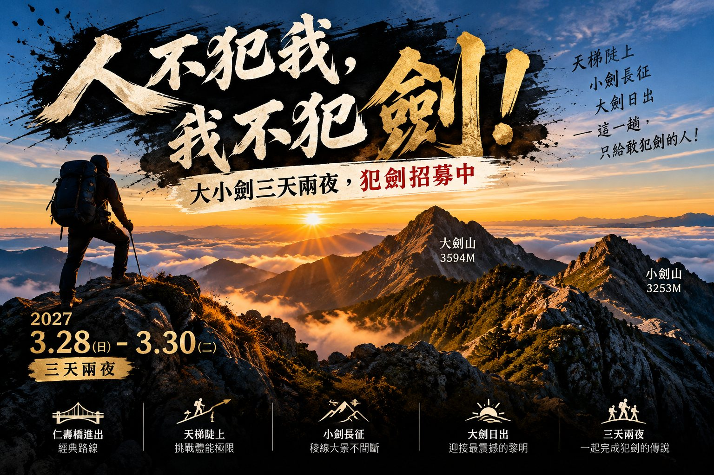

樂山橋是最後的活水；獵寮營地、油婆蘭山屋有儲水桶，推論池、油婆蘭池是黑水塘。濾水器必帶。

大小劍三天兩夜，犯劍招募中
人不犯我，
我不犯劍！
天梯陡上・小劍長征・大劍日出——這一趟，只給敢犯劍的人！
D1 從仁壽橋走林道接防火巷「天梯」上油婆蘭山屋；D2 輕裝來回佳陽山、小劍山；D3 摸黑上大劍山看日出，回山屋後重裝下山。時刻以上河 1.0 純步程為準，每段並列 2026/8 實走 GPX 的時間與里程，注意事項參考山銘誌大小劍影片。
3 月底的高山。大劍山 3,594 m，清晨仍可能結霜、強風低溫；山頂停留時間依天氣縮短。日出約 05:50，日落約 18:15。3 月底午後雷陣雨的風險比夏季低，出發時間改以日照安排：D1 05:00 起登、D3 03:00 出發配合大劍日出；D2 小劍來回太長，只晚 1 小時、03:30 出發。
路線拓樸示意：位置與線長不按真實比例。雙線是原路往返（D2 小劍、D3 大劍）；D3 下山與 D1 同一條路。點任一段可跳到當天。
2026/8 實走 GPX 的高程剖面，橫軸為累計里程。手錶高度與官方標高可能有落差。點任一段可跳到當天。
推論山 6.6K 之後和往小劍的稜線箭竹極密，有露水或前一天下過雨，晴天也要穿雨褲和防水外套。
D1 天梯單日爬升約 1,700 m；D2 小劍來回上河 12 時 25 分，GPX 實走 14.5 小時；D3 大劍加下山共 19.5 km。
四天，一天一頁
D0 是交通與住宿日；D1–D3 是三天兩夜主線。點卡片看當天的時刻、時間閘門、影片提醒和水。
Before the trail
行前與接駁
下面依時間排列要先確認的事、水源、裝備和撤退方式。
一定要先確認的事
- 入山證 在仁壽橋檢查哨繳交，身分證隨身。申請方式與時程以申請系統公告為準。
- 接駁只到仁壽橋 影片提醒：仁壽橋之後的林道窄、有倒木和邊坡崩塌，一般車輛不要硬開進去，迴車會車都危險。
- 油婆蘭山屋或營地 人多時可能要紮營，帳篷依隊伍安排帶上。
- 林道與步道現況 出發前一週查林道、山屋水況與最新路況回報。
時程
- 出發前一個月 申請入山證；預約 D0 交通、環境宮住宿與 D3 回程。
- 出發前 3 天 Windy（ECMWF）＋氣象署山區預報看 48–72 小時，決定照走或延期。
- 3/27 13:30 板橋車站集合出發。
- 3/27 20:00 行前會議：起登時間、撤退點、水源、天氣。
水源一覽
| 地點 | 水源 | 怎麼用 |
|---|---|---|
| 樂山橋 | 活水 | D1 最後的穩定水源，裝滿到山屋 |
| 獵寮營地（3.4K） | 儲水桶 | 到點確認，不要預設有 |
| 推論池 | 黑水塘 | 推論山續行約 150 m 左側；過濾煮沸 |
| 油婆蘭山屋 | 儲水桶 | D1–D2 的主要水源 |
| 油婆蘭池 | 黑水塘 | 備用；過濾煮沸 |
| 大劍鞍部水源 | 水源岔路下切 | 上河來回約 60 分，D3 通常不取 |
裝備重點
- 雨褲＋防水防刮外套 箭竹露水，晴天也要。
- 手套 佳陽大崩壁、布伕奇寒山附近有拉繩攀岩。
- 頭燈與備用電池 D1–D3 都是摸黑出發。
- 濾水器 樂山橋之後都是儲水桶或黑水塘。
- 保暖與防風 大劍山頂風大、低溫。
- 登山杖 D3 天梯長下坡；鞋帶綁緊，避免黑指甲和水泡。
數據怎麼讀
- 左欄時刻以上河大小劍步程示意圖 1.0 倍純步程為準，從每天出發時間連續累加，不含休息。
- 仁壽橋到松茂水文站，上河標的是車程 10 分；接駁只到仁壽橋，本手冊用行程表的林道步行約 65 分計算。
- 對照用的 GPX 是 2026/8/12–14 的大小劍三天實走紀錄（含休息，總長 49.0 km）；里程與高度剖面取自這份 GPX。
- D0 交通沿用行程表。行程表原本是夏季版，為了避開午後雷陣雨很早出發；3 月底改以日出日落安排，時間閘門也跟著順延。
撤退判斷
- D1 14:00 還沒到推論山，就退回獵寮營地（有儲水桶）紮營。
- D2 07:30 還沒到佳陽山要檢討；10:20 還沒到小劍山就折返；14:00 最晚離開佳陽山；18:00 前全員回到山屋。
- D3 強風、白牆或結冰就不上大劍山，直接收拾下山。
來源
路況、水況會變動；本頁以 2026/10/28 整理的資料為版本日期。
時間為上河 1.0 倍純步行推算，不含休息與拍照；實際依天氣、路況與隊伍腳程調整。
高度剖面為 2026/8 實走 GPX，手錶高度與官方標高可能有落差。
2026 年 10 月版